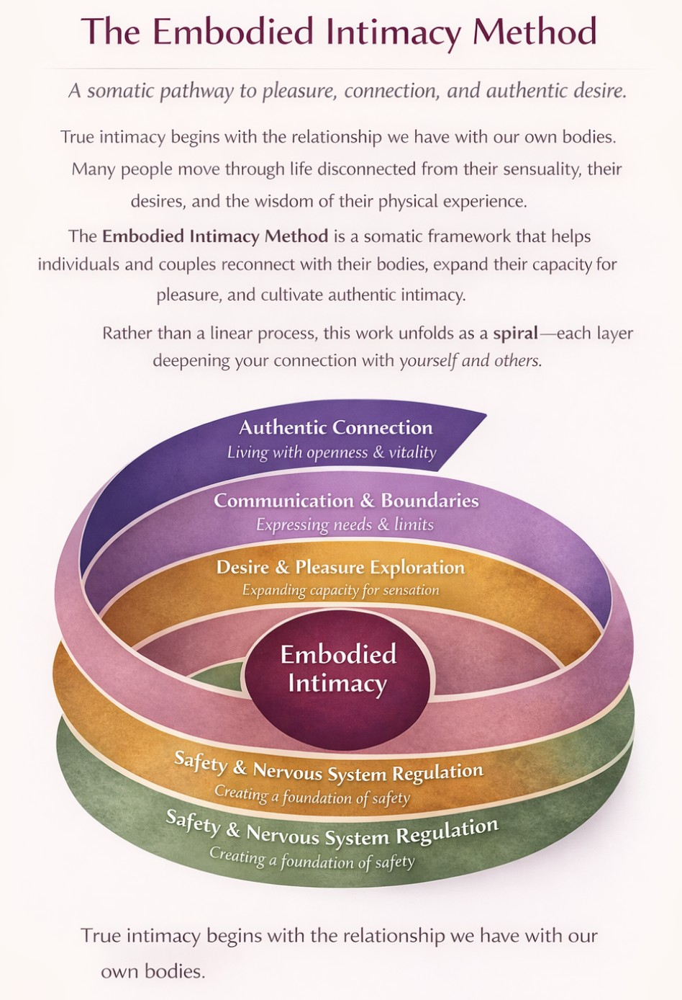
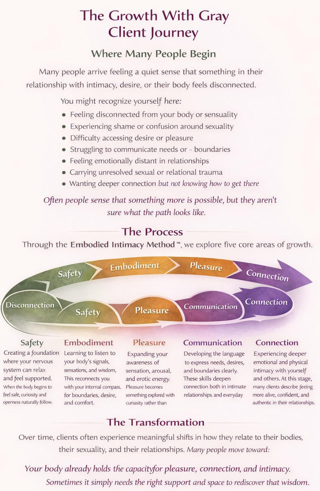

Shame disconnects us from our bodies.
Embodiment brings us home.
Reconnect with your body, reclaim your pleasure, and rediscover intimacy through somatic intimacy coaching and embodied exploration.
Have you ever felt like something was missing from your sex life? Like you know your body well enough to sense that there must be more than what you are experiencing now?
Or perhaps you're curious about your own erotic development and want to become more knowledgeable, attuned, and aware of your body, your desires, and your sexuality.
Intimacy is not something we learn in school. It's something we experience. And most of us were never taught how.
What Is Somatic Intimacy Coaching?
Somatic intimacy coaching takes a body-mind-heart-centered approach to sexuality, connection, and personal growth.
Rather than focusing only on talking about change, this work invites you to experience new possibilities through body-based awareness and embodied learning.
"Somatic sex educators support people on their journey to sexual wholeness through body-based experiences designed to nurture, deepen and awaken the sensual self."
— Caffyn Jesse
These experiences may include guidance in:
- • Breath and nervous system awareness
- • Movement and body connection
- • Sensation and pleasure awareness
- • Boundary-setting and consent practices
- • Communication skills
- • Anatomy and pleasure education
- • Sensate focus and touch-based exploration
Somatic intimacy work helps you reconnect with your body's sensations, desires, and boundaries so you can develop a deeper sense of pleasure, presence, and self-trust.
The Embodied Intimacy Method
A somatic pathway to pleasure, connection, and authentic desire.
True intimacy begins with the relationship we have with our own bodies.
Many people move through life disconnected from their sensuality, their desires, and the wisdom of their physical experience.
The Embodied Intimacy Method is a somatic framework that helps individuals and couples reconnect with their bodies, expand their capacity for pleasure, and cultivate authentic intimacy.
Rather than a linear process, this work unfolds as a spiral—each layer deepening your connection with yourself and others.

Safety, embodiment, pleasure, communication, and connection are not rigid steps—they are living layers of growth.
You Might Benefit From This Work If…
- • You feel disconnected from your body or desire
- • You struggle with shame around sexuality
- • You want to explore pleasure in a safe and supported way
- • You want to improve communication around intimacy
- • You feel stuck in old patterns of relationships or connection
- • You are healing from sexual or relational trauma
- • You want to deepen intimacy with your partner
- • You are curious about your erotic development
- • You want to build a more loving relationship with your body
Many people come to this work with a quiet sense that something more is possible—even if they don't yet know exactly what that looks like.
The Growth With Gray Client Journey
Many people arrive feeling a quiet sense that something in their relationship with intimacy, desire, or their body feels disconnected.
Through this work, we move from disconnection toward safety, embodiment, pleasure, communication, and deeper connection.

Your body already holds the capacity for pleasure, connection, and intimacy.
Sometimes it simply needs the right support and space to rediscover that wisdom.
Why Work With an Intimacy Coach?
If unresolved trauma can store itself in the muscles, fascia, organs, and cells of the body, then so can joy, gratitude, love, and pleasure.
Our bodies are designed to remember.
Somatic coaching invites you to tap into the wisdom of your incredible body and begin to reshape how your nervous system experiences safety, connection, and intimacy.
True healing often requires more than insight. It requires new embodied experiences that help the body learn that it is safe to open again.
- • Experience acceptance and secure connection
- • Develop agency over your body, emotions, and pleasure
- • Learn to feel, name, and communicate emotions
- • Deepen awareness of your body's signals and needs
- • Reduce shame that limits authentic self-expression
- • Clarify and communicate your personal boundaries
True intimacy is the safety we feel in emotional connection—the deep exhale that says: I am safe here.
Who I Work With
My practice supports individuals and couples who want to reconnect with their bodies, understand their desires, and experience deeper intimacy and authentic connection.
Individuals Healing from Blocks Around Sexuality
People who feel disconnected from their bodies, experience difficulty accessing desire or pleasure, or want support healing from trauma, shame, or past experiences that shaped their relationship with intimacy.
Couples Seeking Deeper Connection
Partners who want to strengthen emotional and physical intimacy, improve communication, and explore new ways of connecting with one another.
Queer, Trans, and Non-Binary Individuals
People seeking affirming, inclusive spaces where their identities, bodies, and expressions of sexuality are respected and celebrated.
Neurodivergent Individuals
Including people with ADHD or sensory sensitivities who want to better understand their nervous system and experience intimacy in ways that feel supportive and comfortable.
People Seeking a Deeper Relationship With Their Bodies
Individuals curious about sensation, arousal patterns, self-pleasure, and learning how to listen to their body's signals and needs.
People Interested in Consent and Relational Skills
Those exploring practices such as the Wheel of Consent, boundary communication, and developing greater emotional and erotic fluency in relationships.
What Happens in a Session?
Every session is unique and guided by your goals, curiosity, and comfort level.
Sessions are client-led, consent-informed, and clearly boundaried. Together we create a space where exploration happens at your pace and within your sense of safety.
- • Somatic awareness and body connection practices
- • Breathwork and nervous system regulation
- • Communication and consent exercises
- • Movement and sensation exploration
- • Education around anatomy, pleasure, and arousal
- • Trauma-informed body awareness practices
- • Client-directed touch and body mapping
Some sessions focus on healing old wounds. Others explore new edges of intimacy and pleasure. Often, it is both.
The Experience of Working Together
Working with me is not about fixing you.
It's about creating a space where you can slow down, listen to your body, and discover what is already waiting to be felt and expressed.
Many people come to this work feeling nervous, curious, or unsure of what to expect. That's completely natural.
My role is to create a space where you feel safe, respected, and supported in exploring at your own pace.
In our sessions you may experience:
- • Deep listening and compassionate guidance
- • A calm and non-judgmental environment
- • Clear communication and consent practices
- • Gentle invitations to explore body awareness
- • Moments of curiosity, discovery, and insight
Some sessions feel reflective and emotional. Some feel playful and exploratory. Often they become moments where clients reconnect with parts of themselves that have been quiet or hidden for a long time.
Why Growth With Gray?

My name is Gray, and I'm here to help you reconnect with your body, own your desires, and unapologetically choose pleasure in your life.
I believe pleasure and connection are a birthright for everyone, yet many people face barriers that make these experiences feel distant or inaccessible.
Shame, cultural conditioning, trauma, and silence around sexuality can leave us feeling disconnected from our bodies and unsure how to move forward.
I bring to my work the compassion and sensitivity that I once wished I had earlier in my own journey—meeting people exactly where they are, without pressure, judgment, or expectation.
Through a nervous-system informed approach, we explore how safety, connection, and regulation create the foundation for deeper intimacy and authentic pleasure.
When the body feels safe, desire can finally flow.
Growth with Gray offers an alternative or complementary approach to traditional therapy. While therapy often focuses on resolving specific psychological concerns, intimacy coaching focuses on education, exploration, and sexual empowerment.
My intention is to help clients understand their unique relationship with pleasure, develop better communication skills, and cultivate deeper emotional, physical, and spiritual connection.
My Practice
My in-person practice is located in Central North Carolina, and I also offer virtual sessions.
For ethical and liability reasons, I do not provide intimacy coaching services to clients who currently see me for talk therapy.
Who I Support
Single women, couples, and friend pairs exploring connection, embodiment, and sexual wellness.
How I Work
My approach blends sex-positive coaching, somatic education, and body-based practices in a deeply client-guided way.
Modalities
Movement and embodiment practices, breathwork, trauma-informed nervous system support, boundary and consent practices, communication exercises, and client-directed touch and body awareness.
The Values Behind Growth With Gray
At Growth With Gray, I believe that intimacy and pleasure are not luxuries—they are part of being fully alive. My work is guided by a set of core values that shape every interaction and session.
Safety
Healing and exploration can only happen when people feel safe. Every session is guided by clear boundaries, consent, and respect.
Curiosity
There is no single “right way” to experience intimacy or pleasure. This work invites curiosity and exploration rather than judgment or expectation.
Embodiment
Your body holds wisdom. By listening to sensations, emotions, and nervous system signals, we begin to reconnect with deeper parts of ourselves.
Compassion
Many people carry shame around sexuality. This space exists to replace shame with understanding, kindness, and acceptance.
Authentic Connection
True intimacy begins when we feel safe enough to be fully ourselves—with our bodies, our desires, and our partners.
Frequently Asked Questions
Is this therapy?
No. Intimacy coaching and somatic sex education are educational and experiential practices rather than psychotherapy.
Is touch involved?
Some sessions may include client-directed touch as an educational component. Touch is always optional, consent-based, and clearly discussed beforehand.
Is this work sexual?
This work focuses on education, embodiment, and personal development around intimacy and sexuality. It is not a sexual service.
Do I need to come with a partner?
No. Many people come individually to explore their own relationship with their body, desire, and intimacy.
Is this confidential?
Yes. Your privacy and safety are deeply respected.